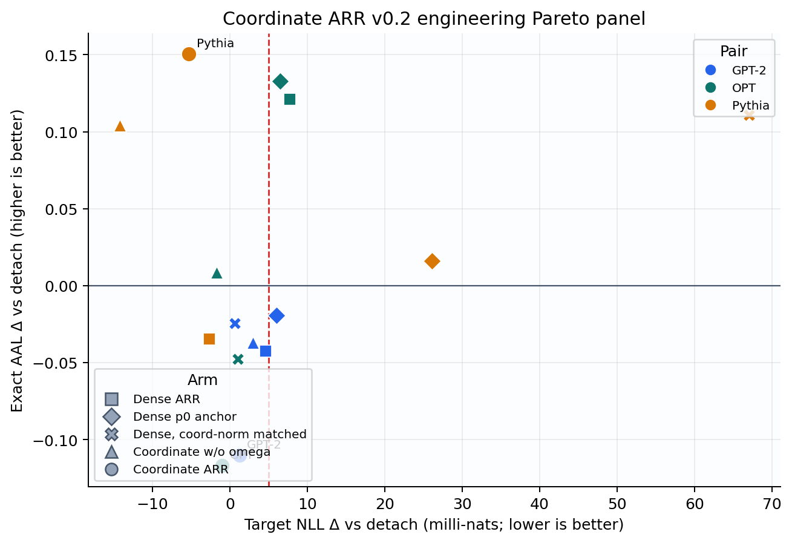
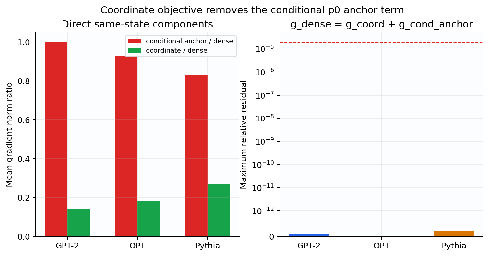
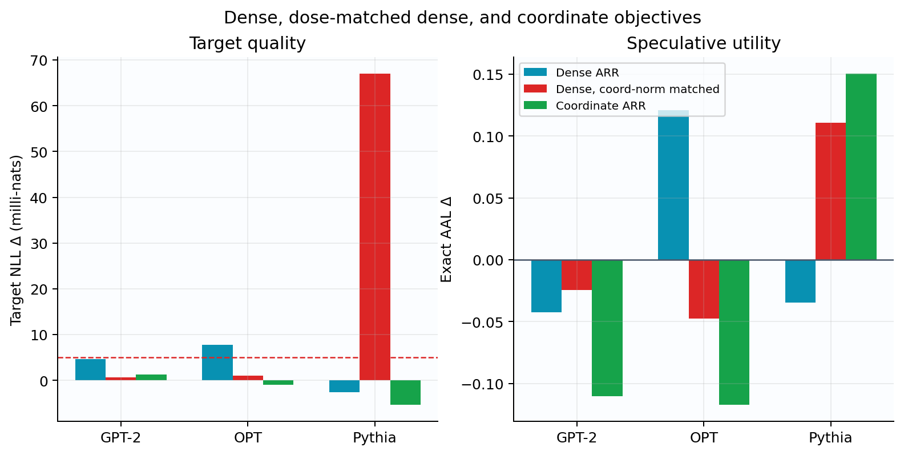
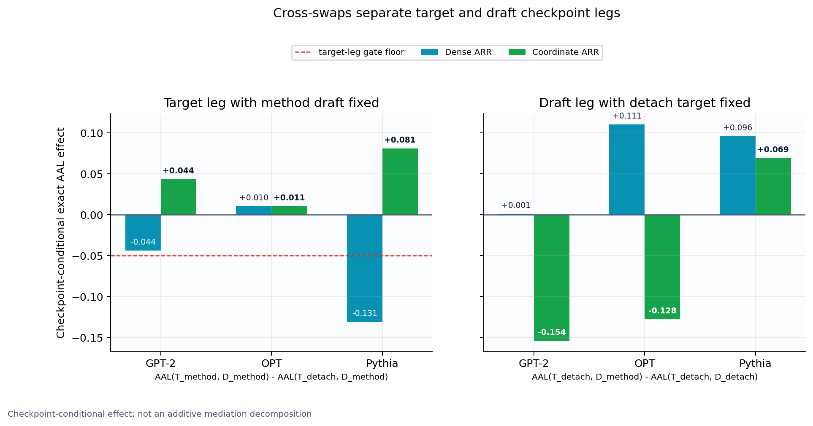

Coordinate-only ARR v0.2: target 보호는 됐지만 joint utility는 아직 아니다¶
판정: Stage 0 identity PASS · target protection PASS · conditional target AAL PASS · 전체 Stage 1 engineering KILL
범위: engineering seed 99, 세 independent pretrained AR target/drafter pair, 100-step rank-8 LoRA adaptation. Selection seeds
6–8은 계속 sealed다.2026-07-17 follow-up. 이 보고서가 제안한 lag/EMA draft-teacher 가설은 Temporal-Teacher Coordinate ARR v0.3에서 prospectively 시험했다. EMA
.9는 GPT/OPT의 negative draft leg를 부분 회복했지만 exact AAL nonnegative0/3, Pythia target-NLL margin 실패로 Stage 1 engineering KILL됐다. 최신 판정은REPORT_TEMPORAL_TEACHER_ARR_STAGE01_KO.md에 있다.
0. 한 화면 결론¶
ARR v0.1의 full-label target auxiliary는 proposal token 하나만 조절하는 loss처럼
보였지만, 실제로는 나머지 vocabulary 전체를 frozen original target p0에 당기는
conditional anchor를 포함했다. v0.2는 그 항만 제거하고 proposal-coordinate
Bernoulli loss만 target에 적용했다.
결과는 두 층으로 나뉜다.
- 약점 개선은 실제였다. Coordinate main의
target NLL − detach는 GPT-2/OPT/Pythia에서+.00124 / −.00100 / −.00528이었다. 세 pair 모두 frozen+.005non-inferiority margin을 통과했다. Dense ARR은 OPT에서+.00774, 같은 coordinate norm으로 줄인 dense control은 Pythia에서+.06703을 기록했다. - 하지만 전체 joint method는 실패했다. Exact AAL 차이는
−.1103 / −.1170 / +.1505로 1/3 pair만 개선됐다. 사전 규칙은 최소 2/3 nonnegative와 최악−.05이상을 요구했으므로 명백한 KILL이다. - 실패 원인은 target 쪽이 아니었다. Co-adapted coordinate draft를 고정한
coordinate-target의 조건부 AAL 기여는
+.0437 / +.0106 / +.0811로 세 pair 모두 양수였다. 반대로 detach target을 고정한 coordinate-draft 효과는−.1539 / −.1276 / +.0694였다. GPT-2와 OPT에서는 drafter co-adaptation이 target의 이득보다 더 크게 나빴다.
따라서 이번 실험이 지지하는 문장은 다음이다.
Dense conditional anchor를 제거하면 pretrained target 보호는 개선된다. 그러나 target-aware target과 drafter를 동시에 학습할 때, 안정화되지 않은 drafter 추종이 그 이득을 speculative endpoint에서 상쇄할 수 있다.

1. 포함하는 설정과 loss provenance¶
Target distribution을 p_theta, 독립 drafter를 q_phi라 한다. 둘은
tokenizer-compatible token ID만 공유한다. Target과 draft의 backbone,
representation, embedding, LM head, LoRA parameter와 optimizer는 모두 분리돼 있다.
MEDUSA, EAGLE, native draft head와 shared representation은 이 보고서의 실험 범위가
아니다.
target p_theta -- detached pathwise teacher --> drafter q_phi
target p_theta <-- detached q-aware coordinate loss -- drafter q_phi
Draft loss는 LK Losses의 pathwise Hybrid LK를 사용했다.
eta=3은 이 저장소의 confirmatory schedule에서 고정한 값이다. Target native loss는
원래 full LM-head vocabulary의 autoregressive CE다. Target-side coefficient beta=1은
이 연구의 실험적 bidirectional extension이며 exact speculative decoding의 필수 조건이
아니다.
Online Speculative Decoding, DistillSpec, Draft-OPD는 proposal/rejection-aware draft 학습의 근거를 제공하지만 target LM을 고정한다. 이 연구는 별도 pretrained target까지 draft-aware하게 움직일 때의 보호 문제를 묻는다.
2. v0.1의 정확한 약점과 v0.2 개선¶
Frozen adapter-disabled target을 p0, drafter proposal token을 z, routed safe
label의 proposal mass를 t=r(z)라 하자. ARR v0.1의 safe label은
이고, full-label loss는 정확히 다음처럼 분해된다.
같은 route, weight와 reduction에서는 FP64 parameter gradient도
로 분해된다. v0.2의 main target update는 두 번째 항을 적용하지 않는다.
여기서 omega=min(1,p0(z)/q(z)), prefix survival S, active rule, TV cap .01,
reverse-KL cap .005, proposal과 t는 v0.1과 동일하고 모두 stop-gradient다.
바뀐 것은 target에 실제 적용하는 loss coordinate뿐이다.
이 loss는 non-proposal logit에 gradient를 전혀 주지 않는다는 뜻이 아니다.
Bernoulli mass 경쟁 때문에 complement logit도 변한다. 제거된 것은
p0(.|not z)를 복원하려는 명시적 frozen-target conditional anchor다.
또한 이 항은 별도 control인 full-label arr_anchor=H(p0,p)와 같지 않다.

Dense arr_main의 11개 diagnostic step 평균에서
||g_cond_anchor||/||g_dense||는 GPT/OPT/Pythia 1.000/.929/.829,
||g_coord||/||g_dense||는 .143/.183/.268이었다. 즉 dense auxiliary의 상당 부분이
proposal-coordinate move가 아닌 conditional anchor였다. FP64 strict decomposition의
최대 상대 잔차는 6.49e-13으로 frozen 2e-5 gate를 통과했다.
3. 실험 설계¶
3.1 Pretrained adaptation panel¶
| Pair | Target | Drafter |
|---|---|---|
| GPT | GPT-2 | DistilGPT-2 |
| OPT | OPT-350M | OPT-125M |
| Pythia | Pythia-410M | Pythia-70M |
세 pair 모두 pretrained checkpoint의 base weight를 frozen하고 target/draft 각각 rank-8
LoRA를 학습했다. WikiText-103, 100 steps, batch 4, sequence 64, BF16,
별도 AdamW(LR=2e-4, betas .9/.95, clip .5)를 사용했다. 따라서 이 실험은
foundation model scratch pretraining의 결과가 아니라, 사용자가 질문한
pretrained model을 가져와 joint loss로 묶는 adaptation setting의 직접 증거다.
같은 pair/seed의 arm은 initialization, minibatch order, scheduler, token exposure, proposal uniforms와 draft update rule/coefficient를 맞췄다. 직접 조작은 target-side auxiliary의 종류다. 이후 target trajectory가 만든 draft co-adaptation은 diagonal endpoint total effect에 포함된다.
3.2 Six-arm comparison¶
| Arm | Target update | 질문 |
|---|---|---|
path_detach |
native CE | primary reference |
arr_main |
CE + weighted dense H(r,p) |
제거 전 v0.1 |
arr_anchor |
CE + weighted full-label H(p0,p) |
단순 anchor/data control |
arr_dense_coord_norm_matched |
CE + c*g_dense |
단순 gradient dose 감소인가 |
coordinate_arr_unweighted |
CE + S*active*L_coord |
omega ablation |
coordinate_arr_main |
CE + S*omega*active*L_coord |
제안한 v0.2 |
Norm-matched dense는 매 step
를 stop-gradient로 계산해 c*g_dense를 적용했다. Coordinate가 좋아지는 이유를 단순
norm 축소와 분리하기 위한 cumulative control이다.
Exact rollout은 FP32 eager에서 WikiText-2, TinyStories, GSM8K text, corpus당 4 prompt,
sampling seeds {0,1}, K=3, 32 generated tokens로 실행했다. AAL은 stochastic raw
row에서 다시 계산했고 greedy speculative output은 각 trained target의 target-only
greedy output과 비교했다.
3.3 Precision preflight¶
초기 v1은 BF16 graph에서 g_dense, g_coord, g_cond_anchor를 세 번 독립 backward한
값에 strict algebraic gate를 적용해 routed 15 runs가 step 10에서 fail-loud 종료됐다.
GPT debug relative residual은 1.706e-2였다. FP32 shadow도 deep-network accumulation
rounding 때문에 5.683e-4로 실패했다.
Threshold를 완화하지 않고, 같은 pre-step adapter state/context/route의 FP64 eager
shadow에서만 수식 항등식을 검사했다. FP64 shadow는 실제 update나 Adam state를
공급하지 않는다. 10-step preflight의 최대 residual은 9.195e-14였다. 실제 BF16
materialized residual도 숨기지 않고 descriptive field로 저장했다. 이 구분은 CE-gradient
tensor가 오염된다는 뜻이 아니라, 서로 따로 계산한 low-precision gradient의 산술 합이
고정밀 수식 항등식과 수치적으로 다를 수 있음을 뜻한다.
실패한 root와 해석은
COORDINATE_ARR_V0_2_PREFLIGHT_FAILURES.json에
보존돼 있다.
4. 검증 결과¶
4.1 Stage 0와 archived bridge¶
- 세 pair의
coordinate_arr_forced_off와 freshpath_detach는 target parameter + full Adam state hash, draft parameter + full Adam state hash, NLL과 overlap이 모두 exact였다. - Analyzer Stage-0 identity는
15/15통과했다. - Fresh v2의
path_detach,arr_main,arr_anchor는 archived ARR v0.1과 세 pair에서 target/draft hash와 endpoint를 bit-exact 재현했다. Bridge는45/45통과했다. - Frozen
p0checksum, target/draft parameter·storage·optimizer disjointness와 route TV/KL cap violation은 모두 통과했다.
4.2 Endpoint target NLL와 exact AAL¶
아래는 같은 pair의 path_detach 대비 차이다. NLL은 낮을수록, AAL은 높을수록 좋다.
| Pair | Arm | Delta target NLL | Delta exact AAL |
|---|---|---|---|
| GPT | dense ARR | +.004600 |
-.042380 |
| GPT | p0 anchor | +.006057 |
-.019274 |
| GPT | norm-matched dense | +.000647 |
-.024256 |
| GPT | coordinate unweighted | +.002960 |
-.036914 |
| GPT | coordinate main | +.001238 |
-.110255 |
| OPT | dense ARR | +.007737 |
+.120975 |
| OPT | p0 anchor | +.006462 |
+.132663 |
| OPT | norm-matched dense | +.001045 |
-.047583 |
| OPT | coordinate unweighted | -.001674 |
+.008686 |
| OPT | coordinate main | -.001003 |
-.117024 |
| Pythia | dense ARR | -.002617 |
-.034755 |
| Pythia | p0 anchor | +.026064 |
+.016098 |
| Pythia | norm-matched dense | +.067026 |
+.110944 |
| Pythia | coordinate unweighted | -.014197 |
+.103974 |
| Pythia | coordinate main | -.005284 |
+.150492 |

Target protection은 분명히 개선됐다. Coordinate main은 세 pair 모두 NLL gate를
통과했고, dense ARR 대비 세 pair 모두 NLL이 낮았다. 특히 Pythia에서 norm-matched
dense의 +.0670 악화와 coordinate의 −.0053 개선은 동일한 auxiliary norm만으로
결과를 설명할 수 없음을 보여 준다. 방향과 누적 Adam state가 중요하다.
그러나 exact AAL은 architecture-robust하지 않았다. Coordinate main은 1/3만
nonnegative였고 GPT/OPT가 frozen floor −.05를 크게 넘었다. Component Pareto도
dense, anchor, norm-matched dense, unweighted 각각에 대해 필요한 2/3 support를 얻지
못했다.
coordinate_arr_unweighted는 primary NLL margin을 세 pair 모두 지키면서 AAL이
2/3 pair에서 nonnegative이고 최악도 −.0369였다. 이는 유망한 exploratory clue지만
사전 main arm이 아니고 main-method component gate에서 비교 대상으로 사용됐으므로
이 결과만으로 selection seeds를 열거나 새 method GO로 바꾸지 않는다. 현재
shared-mass omega가 target safety에는 유용해도 joint speculative utility weight로는
잘못 calibrated됐을 가능성이 있다.
4.3 Cross-swap: target 개선을 drafter가 상쇄했다¶
12개 off-diagonal checkpoint cross-swap으로 coordinate와 dense target/draft를 각각 detach counterpart와 교환했다. 다음은 coordinate arm의 conditional effect다.
| Pair | Diagonal Delta AAL | Target effect given coordinate draft | Coordinate-draft effect given detach target |
|---|---|---|---|
| GPT | -.110255 |
+.043688 |
-.153942 |
| OPT | -.117024 |
+.010598 |
-.127622 |
| Pythia | +.150492 |
+.081140 |
+.069351 |

Coordinate target의 frozen gate estimand
는 세 pair 모두 양수였다. Target-aware coordinate update 자체는 co-adapted draft가 제안한 token을 verifier가 더 잘 받아들이게 했다. 반면 GPT/OPT의 coordinate-trained draft checkpoint를 detach target에 붙이면 AAL이 크게 낮아졌다. 즉 current target을 teacher로 받는 drafter가 target trajectory를 따라가는 과정이 두 pair에서 불안정했다.
Cross-swap은 checkpoint-conditional effect다. Diagonal effect의 유일한 additive causal mediation decomposition으로 해석하지 않는다. 그래도 “다음에 어느 경로를 고쳐야 하는가”를 정하는 intervention evidence로는 target loss보다 drafter co-adaptation을 가리킨다.
5. Frozen gate 판정¶
| Gate | 판정 | 관찰 |
|---|---|---|
| Stage-0 identity | PASS | 15/15 |
| Archived v0.1 bridge | PASS | 45/45 |
| Target NLL non-inferiority | PASS | +.00124/-.00100/-.00528 <= +.005 |
| FP32 exact AAL | FAIL | nonnegative 1/3; GPT/OPT below -.05 |
| Component Pareto | FAIL | 모든 comparator에서 <2/3 |
| FP64 decomposition/trust | PASS | max relative residual 6.49e-13 |
| Bidirectional information path | PASS | nonzero dose, target hash change, participation .134–.234 |
| Exact greedy output | PASS | 30 rollout conditions 모두 rate 1.0 |
| Instrumentation-excluded cost | PASS | 1.58–1.83x <= 2.5x |
| Conditional target AAL | PASS | positive 3/3 |
전체 prospective 판정은 다음과 같다.
Coordinate-only ARR v0.2: engineering KILL. Selection seeds 6–8 remain sealed.
이 판정은 “anchor 제거가 무효”라는 뜻이 아니다. Anchor 제거가 target protection과 conditional target acceptance를 개선했다는 component result는 남는다. 기각된 것은 “현재 shared-mass weighting과 기존 live-target draft teacher를 그대로 두면 세 architecture에서 target-safe exact-AAL gain을 얻는다”는 완성된 joint method 가설이다.
6. 다음 개선안: lagged target-aware draft teacher¶
현재 근거가 가장 직접적으로 지지하는 다음 변경은 target loss를 다시 dense하게 만드는 것이 아니라 drafter가 보는 target teacher의 시간축을 안정화하는 것이다.
actual target update:
native CE + coordinate-only draft-aware auxiliary
draft teacher:
stopgrad(EMA or lagged target), not the rapidly moving live target
information paths retained:
draft proposal --> coordinate target route
lagged target distribution --> draft Hybrid LK
예를 들어 target base와 LoRA를 공유하지 않는 별도 training-only EMA shadow
p_bar를 두고
로 만들 수 있다. 이는 drafter-aware target 학습과 target-aware draft 학습을 모두 유지하면서, auxiliary가 만든 빠른 target oscillation을 draft Adam state가 즉시 추종하는 피드백만 줄인다.
다음 prospective panel은 최소한 다음을 분리해야 한다.
- live teacher vs one-step lag vs EMA decay grid
- coordinate weighted vs coordinate unweighted
- 동일 target coordinate update에서 draft teacher만 바꾼 matched arm
- diagonal exact AAL과 두 방향 cross-swap
- target NLL
+.005margin, exact AAL floor, draft conditional-effect floor - EMA shadow가 실제 target update/optimizer에 storage나 gradient를 공유하지 않는 identity
이 아이디어는 이번 결과가 제안하는 다음 가설이지 아직 검증된 main method가 아니다.
새 manifest를 먼저 고정하기 전에는 selection seeds 6–8을 열지 않는다.
7. 한계와 정확한 주장 범위¶
- Seed 99는 engineering data다. Pair, diagnostic step, prompt, corpus, sampling seed, token과 decoding round를 독립 replicate로 세지 않는다.
- 세 pair를 IID architecture sample로 해석하지 않는다.
- 100-step LoRA adaptation은 scratch foundation-model pretraining을 대표하지 않는다.
- Teacher-forced overlap은 AAL이 아니다. 본 판정은 FP32 eager stochastic rollout을 쓴다.
- FP32 eager greedy identity는 exact speculative decoding의 target-output 보존을 확인할 뿐 target quality를 보증하지 않는다.
- BF16 independent-backward residual은 적용 gradient의 정밀도 현상이고, FP64 수식 항등식이나 CE-gradient tensor 자체의 변조를 뜻하지 않는다.
- Transparent benchmark latency는 production serving throughput이 아니다.
8. 재현과 artifact map¶
| 역할 | 경로 |
|---|---|
| Method definition | COORDINATE_ARR_METHOD_PROPOSAL_KO.md |
| Frozen protocol | COORDINATE_ARR_VALIDATION_PROTOCOL_KO.md |
| Frozen manifest | COORDINATE_ARR_V0_2_STAGE01_MANIFEST.json |
| Precision preflight provenance | COORDINATE_ARR_V0_2_PREFLIGHT_FAILURES.json |
| Coordinate loss/decomposition | src/specdec_joint/coordinate_arr.py |
| Trainer | src/specdec_joint/train_arr.py |
| Fail-loud analyzer | src/specdec_joint/analyze_coordinate_arr_stage01.py |
| Stage-0 root | runs/coordinate_arr_v0_2_stage0_identities_v2/ |
| Stage-1 root | runs/coordinate_arr_v0_2_stage1_engineering_v2/ |
| FP32 diagonal rollouts | runs/coordinate_arr_v0_2_stage1_fp32_rollouts_v2/ |
| FP32 cross-swaps | runs/coordinate_arr_v0_2_stage1_fp32_cross_swaps_v2/ |
| Initial immutable analysis | artifacts/coordinate_arr_v0_2_stage1_analysis_v2/ |
| Visual-enhanced deterministic reanalysis | artifacts/coordinate_arr_v0_2_stage1_analysis_v3/ |
원래 H100 host에서는 모든 CUDA/PyTorch command 전에 다음 library를 preload한다.
export LD_PRELOAD=/lib/x86_64-linux-gnu/libcuda.so.580.95.05:/lib/x86_64-linux-gnu/libnvidia-ml.so.580.95.05
export PYTHONPATH="$PWD/src"
Completed root는 덮어쓰지 않고 새 versioned root를 사용한다.
STAGE=stage0 GPU_LIST=0,1,2 bash scripts/run_coordinate_arr_stage01.sh
STAGE=stage1 GPU_LIST=0,1,2 bash scripts/run_coordinate_arr_stage01.sh
STAGE=rollout GPU_LIST=0,1,2 bash scripts/run_coordinate_arr_stage01.sh
STAGE=crossswap GPU_LIST=0,1,2 bash scripts/run_coordinate_arr_stage01.sh
python -m specdec_joint.analyze_coordinate_arr_stage01
Analyzer가 소비한 panel은 Stage-0 6 training runs, Stage-1 18 runs와 1,800 history rows, 165 FP64 mechanism rows, 18 diagonal + 12 cross-swap rollout runs와 총 1,080 raw rollout rows다. Gate JSON, input/output SHA-256와 figure manifest는 analysis root에 있다.